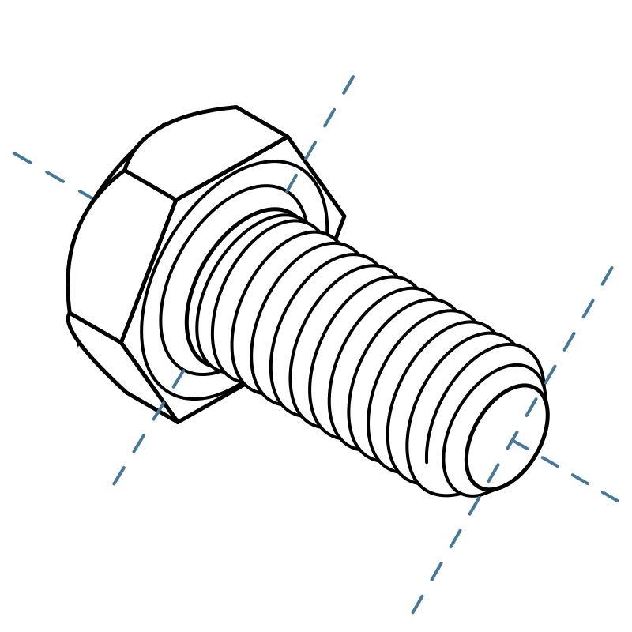

{% docs templates.html#css from './css/color.css' %}
{% docs templates.html#css from
'./css/input.css'
'./css/label.css'
'./components/check-label.css'
'./components/switch-label.css'
'./components/check-button.css'
'./components/select-button.css'
'./elements/range-control.css'
'./elements/rotary-control.css' %}
{% docs templates.html#css from './sass/grid.scss' %}